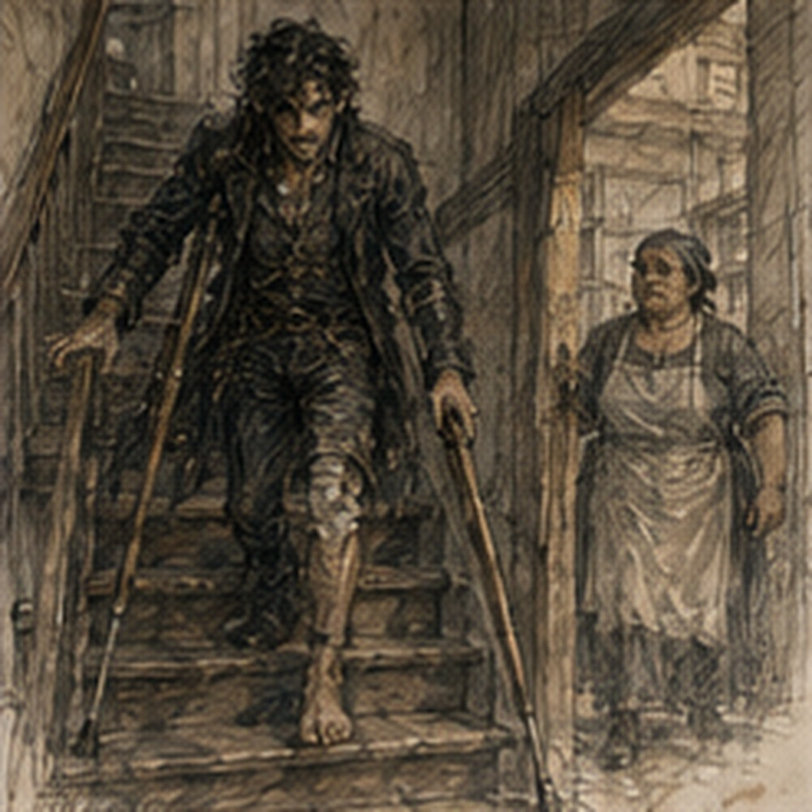

The chamber pot had become personal. This was unreasonable. It had no opinions. I had several. The keeper took it downstairs after breakfast without commenting, which somehow made the situation worse.
“Tomorrow,” I said.
She looked at me.
“What?”
“I go down.”
“Maybe.”
“Everyone uses that word.”
“Useful word.”
Terrible woman. My residual limb looked less swollen than yesterday. Not normal. There was no normal yet. Closer to the morning before the first staircase. I could see that much. The incision remained dry through the dressing. No heat I could detect. No strange smell.
Pain mostly ache, with one sharp place if I shifted wrong. Phantom foot felt planted on the floor even while I sat on the bed. Wrong floor. Wrong foot. Very confident. I hated confidence without evidence. Personal problem. I drank tea. The keeper took the tray.
“Guild sent word.”
“What?”
“Nerin coming.”
“When?”
“Soon.”
“Good.”
There it was again. She smiled. I threw a piece of crust at her. Missed. She left it on the floor. Now I had to retrieve it. Cruel.
*
Nerin arrived with a satchel and used the new rail. Everyone used the rail. Dela had gotten value immediately. He came into my room breathing normally. Show-off.
“Morning.”
“Swelling is down.”
“I'll decide.”
“You can look from there.”
“I can also leave.”
“Fine.”
He unwrapped. The room smelled faintly medicinal. I watched his face. No reaction. Good.
“Back toward baseline,” he said.
“How far?”
“Enough.”
“Enough for what?”
“Inspection.”
“Nerin.”
He grinned.
“Incision intact. No new drainage. No heat. No spreading redness. Margin still looks viable.”
“Stairs?”
“Sera says one controlled descent if you feel as good after dressing and breakfast as you do now.”
“I already ate.”
“Then dressing.”
“I am dressed.”
He looked at my trousers. Right.
“Medical dressing.”
“Language is badly designed.”
“Yes.”
He rewrapped.
“Spotter?”
“Jorren if available.”
“He works.”
“Then someone else.”
“Keeper?”
“Could, if she can follow instructions and control your belt.”
“She can control everyone.”
“Good.”
“Hessa?”
“Working.”
“Alden?”
“No.”
“Everyone hates Alden.”
“No one hates Alden. We understand Alden.”
Fair.
“What if I get to landing and can't continue?”
“Sit.”
“On landing?”
“Yes.”
“What if before landing?”
“Sit on a step using the technique Sera showed you.”
“What if I can't stand again?”
“Wait. Get help. You are not being chased.”
This was an important structural feature of stairs.
“What if phantom foot goes first?”
“Don't follow it.”
“Excellent medical science.”
“You know the sequence.”
Rail. Crutch. Right foot. Down. The order still felt wrong. My body wanted left foot down first because that was how stairs worked. Had worked. Would not.
“Do I need Guild after?”
“No.”
“Holl?”
Nerin looked at me.
“Who?”
“Nothing.”
“Then probably no.”
Fair.
“Tomorrow?”
“Depends on today.”
Of course.
*
Jorren could not come. He sent a note.
WORKING. APPARENTLY SOME OF US STILL DO.
Below that:
DON'T FALL. I DON'T HAVE TIME.
Friendship. The keeper volunteered.
“I've moved sacks heavier than you.”
“I am not a sack.”
“You complain more.”
She tied her apron tighter. Nerin had left instructions. Position below and slightly behind. Hand at belt only if needed. Do not grab crutch. Do not pull unless I lost balance. Keeper listened once.
“Simple.”
“That is what Jorren said.”
“Did he drop you?”
“No.”
“Then.”
Fine. I stood at the top. This was worse. Going up, the staircase rose in front of me. Work. Visible. Going down, the empty space came first. Fourteen places to fall. No. Thirteen? If first step. Stop. Rail right hand. Crutch left. Right foot.
The phantom left foot was already on the first lower step. It felt so real I almost moved weight into it while still standing at the top. No. Actual contacts. Right foot on floor. Right hand rail. Left hand crutch. Nothing else.
“Ready?” keeper asked.
“No.”
She waited. Good. I moved crutch down one step. Rail hand lower. Right foot followed. One. My stomach dropped more than my body. Fine. Crutch. Rail. Right. Two. Three. The rhythm was slower than ascent. Much.
On ascent, right leg pushed. On descent, right leg had to lower me under control while arms took part of the load. Different. Four. My thigh started working. Five. Phantom heel struck a step that did not exist. I flinched. Stopped. Keeper's hand touched my belt. Not pulling.
“Fine,” I said.
“I didn't ask.”
Good. Six. Seven. My right knee trembled. Not failure. Information. Eight. The stair below looked farther away than the one above had. That made no geometric sense. Body did not care. Nine. I lowered too fast. Right foot hit harder. Residual limb throbbed. I froze.
“Sit,” keeper said.
“I can continue.”
“Didn't say you couldn't.”
Annoying. I sat. Technique. Turn carefully toward rail. Keep residual limb clear. Lower. My arms were grateful before my pride could object. I sat on step nine. Or five from bottom. Depends direction. No. Stop counting. The keeper sat two steps below me.
“Tea?”
“What?”
“You look like you need tea.”
“On stairs?”
“No.”
“Then why ask?”
“Something to discuss.”
I laughed. That helped. We waited. My right thigh stopped trembling. Hands okay. Shoulders tired but not shaking. Residual limb ache settled. Phantom toes curled around an imaginary stair edge. Rude. Standing from the step was harder than sitting. Rail. Crutch. Right foot. Push. The keeper stayed close. Up. Good. Continue. Ten. Eleven. Twelve. Landing. There.
The landing was easier going down in one way. I could stand on actual flat floor. Harder in another. Turn. The phantom foot wanted to pivot. Again. I stared at the window. Rain marks on glass. No rain today. Rail continued. Crutch. Right foot. Turn in pieces. Not one movement. Three small adjustments. Done. Two stairs left. Two. First. My right leg complained.
Second. Ground floor. Kitchen. I stood there. Done. No. Not done. Standing. I needed chair. The keeper moved one behind me. I backed until right calf touched it. Crutches one side. Reach. Sit. Too fast. Still. I was downstairs. No applause. The keeper went to stove.
“Tea?”
“Yes.”
“Thought so.”
My hands shook around the cup. Not much. Enough. I laughed.
“Why?”
she asked.
“I can use the privy.”
“Congratulations.”
“Thank you.”
“Don't go yet.”
“I know.”
Good.
*
I waited forty minutes. Not because anyone told me forty. Because at twenty my thigh still trembled. At thirty it didn't. At forty I was bored. Useful measurement. The privy trip was almost anticlimactic. Front of kitchen. Back threshold. Packed dirt. Dry. Crutches. Right foot. Privy step. Door. I had done this before. The body remembered. Not perfectly. Enough. I came back sweating.
Of course. Stairs plus privy. Physical budget. I sat. The keeper put bread in front of me.
“I didn't ask.”
“You're eating it.”
Correct.
*
The storage room door was open. Cot. Crates. Broken chair gone. Damaged left boot still near folded table. I looked in. Temporary. Actually temporary now. Maybe. I could not safely go upstairs and downstairs whenever I wanted. One descent did not create commute. But I had been upstairs two nights. Now downstairs.
The storage room no longer felt like the only place I could exist. That mattered. No. Don't make sentence. I picked up the damaged boot. First time since Jorren brought it. The leather was stiff where it had dried. Cut side gaped. Sole twisted. No foot inside. Obviously. I turned it over. Tam could salvage leather. That was all. I tucked it under one arm.
Then remembered crutches. Right. Carrying. Still. I put it down. Could tie it to belt. No. Could ask keeper. Yes. Later. I hated later less today. Maybe because I had successfully gone somewhere.
*
For the first time in several days, I stood just inside the front door with nowhere assigned. Not Guild. Not healer. Not work. Not green door. Outside. That was all. I could go twenty feet. Fifty. Corner. Maybe farther. The street was dry. I stepped out. Crutches first. Right foot.
The front step had become familiar enough that I no longer hated it individually. Progress. A fruit seller had set a basket near the wall. I bought a pear. One copper for two. I bought two because nineteen-year-old hunger was apparently a profession. The seller handed them over. I had no free hand. Right. She looked at crutches. Then at pears.
“Pocket?”
“No.”
“Bag?”
“No.”
She put both pears into the front of my shirt. I stared. She stared.
“Works.”
It did. I walked back into lodging with two pears against my stomach. The keeper looked up.
“What?”
“Nothing.”
“Why are you shaped like that?”
“Commerce.”
She laughed. I ate one. The second remained on table. This was the first thing I had bought outside since getting downstairs again. Not meaningful. Pear. Good. I considered walking to the corner. No. My arms already felt the stairs. Pear expedition sufficient. The Guild sent no job. Excellent. Pell sent no note. Also excellent. Alden did not appear. Everyone had lives.
I sat at the kitchen table with current notebook.
HOLL.
WHAT DECISION SHOULD FAST TEST ENABLE?
RAW ACCEPT?
TREATMENT ADJUST?
FINAL SORT?
I had wanted to go yesterday. Could go today. No. I had just descended fourteen stairs and used the privy. My arms knew. Tomorrow maybe. But I could think. Dangerous distinction. I drew three columns. Not sinkstone. General testing.
INPUT.
PROCESS.
OUTPUT.
A fast cheap test could tell you whether to buy raw material. Whether to adjust treatment. Whether to sort finished material. Different test requirements. Raw acceptance might tolerate rough measurement. Treatment adjustment needed feedback quickly enough to change process. Final sorting needed repeatability and throughput. There. Obvious. Maybe useful.
Then another question:
WHAT DOES HOLL ACTUALLY SELL?
I knew pieces. Treated stock. Testing. Not enough. Ask. Good. No more. I closed notebook. This was better than inventing his business from memory.
*
Tam came at midday. Not summoned. He had my cleaned glove.
“Dorn's.”
“Mine.”
“Was Dorn's problem.”
“Fair.”
He handed it over. Clean enough. Stain remained. I put it beside the other glove on table. Then pointed toward storage room.
“Boot.”
“You brought it?”
“It is six feet away.”
“Impressive.”
“Fuck you.”
He fetched it. Good. He examined the leather professionally. No symbolism. Pressed sole. Checked stitching. Looked at cut.
“Upper has usable sections.”
“For what?”
“Patch work. Straps. Small pieces.”
“Worth?”
“Not much.”
“Can you use it?”
“Yes.”
“Then take it.”
He looked at me.
“Sure?”
“Yes.”
There. Simple. He put it in his bag. No plan. No peg. No future. Leather. Gone. I felt something. Not enough to name. Fine.
“What do I owe?”
“Nothing. Leather pays.”
“Too much?”
“No.”
“Too little?”
“No.”
“Suspicious.”
“Greg.”
“Fine.”
He looked at the new rail.
“You went down?”
“Yes.”
“Good.”
I pointed at him. He laughed. Everyone.
*
After Tam left, I wanted the green door. Not tonight. Now. Lunch hour. Maybe someone there. Probably not. That was the point. I could go outside. Could I? Yes. Crutches. No stairs until returning. Ah. Returning meant ascent.
Sera had cleared one descent, not a full day out plus ascent. There. Mobility remained asymmetric. I could leave and then be unable to safely get back to my room. Could sleep downstairs. Possible. Did I want that? No. Could go green door and use storage room tonight. Maybe. This was ridiculous. Not ridiculous. Logistics. I sat. Wanted company. Jorren working. Sevren route unknown.
Octavia work. Nessa maybe. Could send note. No. I did not want organized company. I wanted to walk into somewhere and find people. Spontaneity had stairs now. That hurt more than chamber pot. I stared at bread crumbs. Then the front door opened. Sevren. Of course. He carried a rolled map.
“Why are you here?”
“Keeper said you got down.”
“How does everyone know?”
“Carrow.”
He sat.
“Green door?”
I looked at him.
“Now?”
“Lunch.”
“I can't necessarily get back upstairs.”
“Sleep downstairs.”
“I don't want to.”
“Then don't go.”
Terrible.
“I want both.”
“Greedy.”
“Yes.”
He unrolled map. Not for me. Courier route map. He needed kitchen table because rain had smeared one corner and he wanted to copy two street names from keeper's old district map.
“Why here?”
“Closer.”
Good. I watched him work. Normal life entered my kitchen instead. Not same. Still.
“North again?” I asked.
“Tomorrow.”
“How long?”
“Two days.”
“Baker?”
He looked at me.
“Fuck you.”

Good. He copied names. Then left. No cards. Work. Fine. I felt better. Annoying.
*
After Sevren left, I tried to nap. Could not. The storage room was too warm. The kitchen too loud. Upstairs had been quieter. Of course. I had spent days wanting downstairs access and now immediately missed upstairs. Human beings were badly designed.
I took current notebook to kitchen. The second pear was still there. I ate it. Then I wrote a list titled THINGS UPSTAIRS. Mirror.
Brown notebook.
Clean shirt.
Calendar.
Wooden horse.
Sword. Sword was upstairs. Right. Did I need sword downstairs? No. Did I want it? Maybe. Could ask someone. No need.
The list became ridiculous quickly. Everything could migrate every time I moved, or I could stop treating each floor as a permanent relocation. There. I crossed out title.
Wrote:
LEAVE MOST THINGS WHERE THEY ARE.
Good. The keeper saw.
“You finally learn?”
“About what?”
“Moving everything.”
“I moved almost nothing.”
“Jorren moved everything.”
“Details.”
She put a basket of folded towels beside stairs.
“Those going up?”
“Yes.”
“I can carry.”
“No.”
“I can.”
“With crutches?”
“One hand.”
“No.”
“Why?”
“Because I am going up anyway.”
Right. She carried them. This was not my problem. I had almost volunteered because carrying things felt like proof of participation. No. Towels did not need my growth. Excellent. By afternoon the residual limb had swollen slightly. Expected after stairs. No seepage. No heat. I checked too often. Three times in an hour. Stop. I put blanket over it.
Not because that changed anything. Because then I could not look. Good technique. Hessa arrived later. Channel check. Quiet. She looked at me at kitchen table.
“Down.”
“Yes.”
“How?”
“Ugly.”
“Good.”
I pointed. She ignored.
“Any casting?”
“No.”
“Any experiments?”
“No.”
“Any Holl?”
“No.”
She paused.
“How do you know Holl?”
“Everyone knows everything.”
“No. Why are you saying Holl?”
“Edrin allowed general testing conversation.”
Hessa's face changed slightly. Interest.
“Sinkstone?”
“I can't tell you details?”
“You can tell me whatever Edrin allows. I am not asking.”
Right. Ownership.
“General testing.”
“Fine.”
She checked residual limb externally.
“Swelling expected.”
“Too much?”
“No.”
“Stairs tomorrow?”
“Ask Sera.”
“Everyone.”
“Yes.”
I looked at my hands. Wraps dirty.
“Can I stop wrapping?”
“Not if pressure points are still tender.”
“They're less.”
“Then maybe lighter.”
She rewrapped one.
“Barrier?”
I asked.
“No.”
“I didn't ask to cast.”
“You were going to.”
“I was going to ask when.”
“No.”
“That's not a time.”
“Correct.”
Fine. No magic. Still.
*
The afternoon dragged. I wanted something to happen. This was dangerous because Carrow usually obliged eventually. A cart broke a wheel outside. Not mine. I heard the crack. My entire body went tight before thought. Wheel. Wood. Street. Not yard. I stayed seated. People shouted. Not panic. Annoyance. The cart driver swore. Someone laughed. A jack arrived. Ordinary repair. My heart slowed.
I did not go look. Not because afraid. Partly because afraid. Also because it was not my cart. Good enough. Five minutes later I did look through window. They had blocked the axle. Lifted. Changed wheel. No catastrophe. I watched until boring. Boring was excellent.
Then I returned to notebook. A Guild runner came near fourth bell. I saw the colors through front window and immediately assumed work. Wrong. Note from Sera.
NO SECOND STAIR TRIP TODAY.
WOUND CHECK TOMORROW MORNING.
IF NO INCREASED DRAINAGE/HEAT/REDNESS, MAY PRACTICE ONE ASCENT AFTER.
Clear. Good. I read it twice. One ascent tomorrow. Not tonight. Storage room tonight. I looked at stairs. My room upstairs. Bed. Window. Privacy. Then storage cot. Kitchen near. Privy near. Front door near. Different advantages. I could be angry. Was. A little.
I moved into storage room for the night without calling it defeat. Mostly because all my useful downstairs things were still there. Cot. Blanket. One shirt. No mirror. Mirror upstairs. Fine. I could survive without seeing face. Probably improvement.
*
Before Jorren, Nessa stopped at the lodging door. She had apparently come to borrow a pot from the keeper. Normal. She saw me in storage room.
“You moved back?”
“No.”
She waited.
“I went down.”
“Ah.”
“Can't go up again today.”
“Ah.”
“Stop understanding.”
She smiled.
“Green door tomorrow?”
“Maybe.”
Her face changed. I pointed.
“Don't.”
“I didn't say anything.”
“Everyone.”
She borrowed pot. Left. That was the entire visit. Good. Jorren came after work. He found me downstairs.
“Failed?”
“No.”
“Then why?”
“No second stair trip.”
“Oh.”
He sat on crate.
“Down was worse?”
“Yes.”
“Fall?”
“No.”
“Sit?”
“Yes.”
He smiled.
“On stairs?”
“Yes.”
“Old man.”
“I am older than you.”
“No.”
Complicated.
“Beer owed,” he said.
“Not today.”
“Tomorrow?”
“Maybe.”
He groaned.
“Everyone uses that word.”
I stared. He laughed so hard he nearly fell off crate. Traitor.
*
Before dinner I washed in the downstairs basin again. Chair. Pitcher. Cloth. Familiar sequence. The first time after discharge, lifting my right foot to wash it had felt like removing the only point holding me to the world. Now I knew how to brace one hand against chair and keep weight through hip. Still awkward. Less frightening. I washed the right foot.
The phantom left foot became wet too. Of course. Cold water sensation across toes that did not exist. I waited. It faded. No experiment. Hessa would be unbearable if I turned washing into research. I cleaned around the crutch wraps and changed the cloth at one palm. Skin underneath pink. Tender. Not broken. Good. The keeper passed.
“You need more wrap?”
“Maybe tomorrow.”
“I have old linen.”
“Medical?”
“Clean.”
“Different.”
“Cloth is cloth.”
Hessa would object to that sentence on principle.
“I'll ask.”
The keeper shrugged. I finished washing. Putting shirt back on while seated no longer required thought until my elbow caught the chair back. Then swearing. Normal. I looked toward stairs. The rail was visible from basin. Someone had hung a scarf over it. I stared.
“Whose?”
“Mine,” keeper said.
“Don't use structural modification as laundry.”
“It is a rail.”
“It is my rail.”
“Dela's rail.”
“Building's rail.”
“Then building holds scarf.”
I had no answer. Excellent. The rail was already ordinary enough to hold laundry. That might have been insulting if it had not been exactly what I wanted. Dinner in kitchen. Better than tray upstairs.
I liked being around stove noise. Keeper arguing with vegetable seller at door. Someone coming down stairs using my rail. Dela's rail. Building's rail. Whatever. I could go to privy without scheduling another person. I could leave through front door if I wanted. I could not sleep in my own bed tonight. Trade. No perfect arrangement. Obvious. Still annoying. I ate two bowls.
Nineteen-year-old body. Hungry. Good.
*
The keeper left the stair lamp burning longer than usual.
“For me?”
“For tenants.”
“Which tenant?”
“All.”
There were three people upstairs. Right. Rail. Lamp. Neither existed solely for me once installed. Good. I listened to somebody descend. Hand on ash. Step. No hesitation. I was jealous of a stranger using my staircase more easily than I could. Then annoyed at calling it my staircase. Then tired of myself. Useful sequence. At night I lay on storage cot again.
Different than before. The ceiling had not changed. The room had not changed. I had. No. Avoid. My options had. Better. Upstairs was accessible under conditions. Downstairs was accessible under different conditions. Neither was fully mine whenever I wanted. Yet. I opened notebook. HOLL tomorrow? Question mark. I hated question marks. Left it.
Below:
SERA MORNING.
MAYBE ONE ASCENT AFTER.
Then:
GREEN DOOR?
Another question mark. Too many. I crossed out GREEN DOOR. Not because no. Because I did not need to schedule wanting company. Good. HOLL stayed. Actual appointment? No. Possible. Could decide after wound check. Reasonable. I turned off lamp. Phantom foot pressed flat against the floor. Storage-room floor this time. At least it had chosen the correct room. I laughed. Then stopped because the joke was bad.
Then laughed again anyway. Tomorrow I might go upstairs. Tomorrow I might go to Holl. Tomorrow I might do neither. The staircase remained fourteen steps. The city remained larger than the staircase. For tonight, I was downstairs because I had gone down. That was enough.